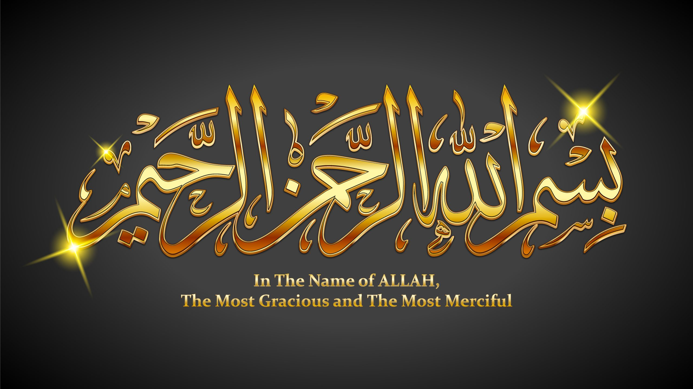
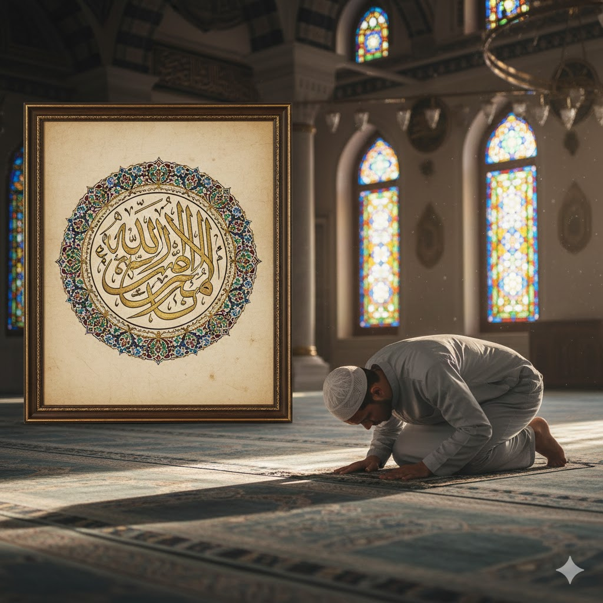

Surah Al-Fatihah, yang berarti "Pembukaan", adalah surah pertama dalam Al-Qur'an dan memiliki kedudukan yang sangat mulia. Surah ini sering disebut sebagai Ummul Kitab (Induk Kitab) karena mencakup seluruh makna dasar ajaran Islam.
1. Pujian kepada Allah (Ayat 1-4)
بِسْمِ اللّٰهِ الرَّحْمٰنِ الرَّحِيْمِ
Diawali dengan Basmalah, mengingatkan kita bahwa setiap permulaan haruslah dengan menyebut nama Allah, yang Maha Pengasih dan Maha Penyayang.
2. Ikrar Peribadatan (Ayat 5)
اِيَّاكَ نَعْبُدُ وَاِيَّاكَ نَسْتَعِيْنُۗ
Ini adalah inti dari Tauhid. "Hanya kepada Engkaulah kami menyembah dan hanya kepada Engkaulah kami memohon pertolongan."
3. Permohonan Hidayah (Ayat 6-7)
اِهْدِنَا الصِّرَاطَ الْمُسْتَقِيْمَۙ
Puncak dari surah ini adalah permohonan kita yang paling mendasar: petunjuk menuju jalan yang lurus (Shiratal Mustaqim).

Wallahu a'lam bish-shawab.